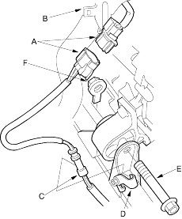
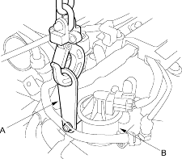
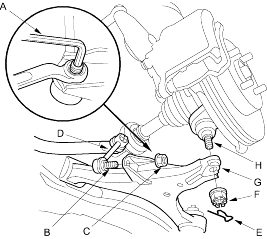
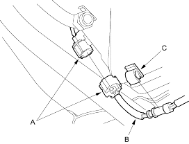

- Remove the primary HO2S connector (A) from its bracket (B) and disconnect it. Remove the primary HO2S harness (C) from its clamp (D).

- Remove the front mount bolt (E) and nut (F).
- Attach a hoisting bracket (A) to the stud next to the EGR valve (B), then lift the engine.

- Insert a 5 mm Allen wrench (A) in the top of the ball joint pin (B) and remove the nut (C), then separate the stabiliser link (D) from the lower arm.

- Remove the spring clips (E) and castle nuts (F) and separate the lower arms (G) from the knuckles (H) (see page 18-11).
- Pry the driveshafts out of the differential (see page 16-3).
- Disconnect the secondary HO2S connector (A) and remove the secondary HO2S harness (B) from its clamp (C).
